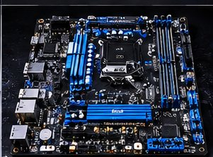

Audio player
Workshop audio preview
This short original electronic audio sample demonstrates the HTML5 audio player and its playback controls.
Audio sample created for this website demonstration; it is not a recording of the workshop.
Audio and visual resources for the Shabil Electronics website.
This short original electronic audio sample demonstrates the HTML5 audio player and its playback controls.
Audio sample created for this website demonstration; it is not a recording of the workshop.

Illustrative electronics image from the website's local image collection.